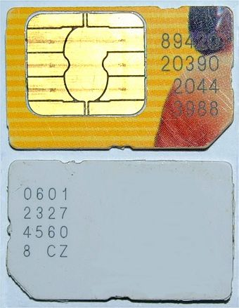
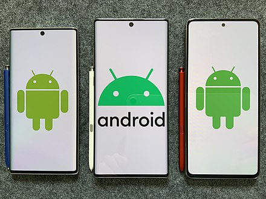
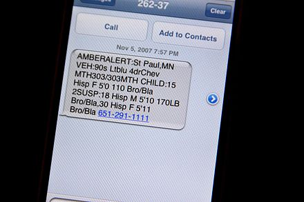

- A central processing unit (CPU), the processor of phones. The CPU is a microprocessor fabricated on metal–oxide–semiconductor (MOS) integrated circuit (IC) chip.
- A battery, providing the power source for the phone functions. A modern handset typically uses a lithium-ion battery (LIB), whereas older handsets used nickel– metal hydride (Ni–MH) batteries
- An input mechanism to allow the user to interact with the phone. These are a keypad for feature phones, and touch screens for most smartphones (typically with capacitive sensing).
- A display which echoes the user's typing, and displays text messages, contacts, and more. The display is typically either a liquid-crystal display (LCD) or organic light-emitting diode (OLED) display.
- Speakers for sound.
- Subscriber identity module (SIM) cards and removable user identity module (RUIM) cards.
- A hardware notification LED on some phones
Low-end mobile phones are often referred to as feature phones and offer basic telephony. Handsets with more advanced computing ability through the use of native software applications are known as smartphones. The first GSM phones and many feature phones had NOR flash memory, from which processor instructions could be executed direcly in an execute in place architecture and allowed for short boot times. With smartphones, NAND flash memory was adopted as it has larger storage capacities and lower costs, but causes longer boot times because instructions cannot be read from it directly, and must be copied to RAM memory first before execution.
Facts:
the number of people who have a mobile phone in the world is very high (about 5,000 million, and it is increasing as we speak and each user has about 1.5 phones on average, which means that the number of mobile lines is located close to 7,500 million, and the world is populated by 7,350 million people.Central processing unit
Mobile phones have central processing units (CPUs), similar to those in computers, but optimised to operate in low power environments. Mobile CPU performance depends not only on the clock rate (generally given in multiples of hertz)[21] but also the memory hierarchy also greatly affects overall performance. Because of these problems, the performance of mobile phone CPUs is often more appropriately given by scores derived from various standardized tests to measure the real effective performance in commonly used applications.
Display
One of the main characteristics of phones is the screen. Depending on the device's type and design, the screen fills most or nearly all of the space on a device's front surface. Many smartphone displays have an aspect ratio of 16:9, but taller aspect ratios became more common in 2017. Screen sizes are often measured in diagonal inches or millimeters; feature phones generally have screen sizes below 90 millimetres (3.5 in). Phones with screens larger than 130 millimetres (5.2 in) are often called "phablets." Smartphones with screens over 115 millimetres (4.5 in) in size are commonly difficult to use with only a single hand, since most thumbs cannot reach the entire screen surface; they may need to be shifted around in the hand, held in one hand and manipulated by the other, or used in place with both hands. Due to design advances, some modern smartphones with large screen sizes and "edge-to-edge" designs have compact builds that improve their ergonomics, while the shift to taller aspect ratios have resulted in phones that have larger screen sizes whilst maintaining the ergonomics associated with smaller 16:9 displays.
Liquid-crystal displays are the most common; others are IPS, LED, OLED, and AMOLED displays. Some displays are integrated with pressure-sensitive digitizers, such as those developed by Wacom and Samsung,[25] and Apple's "3D Touch" system.
Facts:
the Falcon Supernova Pink Diamond IPhone 6, which has a case made of 18-carat gold and has a large pink diamond on its back. Lucky for us, there is also a more affordable version of this phone, which you can buy for just 48.5 million dollars.Sound
In sound, smartphones and feature phones vary little. Some audio-quality enhancing features, such as Voice over LTE and HD Voice, have appeared and are often available on newer smartphones. Sound quality can remain a problem due to the design of the phone, the quality of the cellular network and compression algorithms used in long-distance calls.[26][27] Audio quality can be improved using a VoIP application over WiFi.[28] Cellphones have small speakers so that the user can use a speakerphone feature and talk to a person on the phone without holding it to their ear. The small speakers can also be used to listen to digital audio files of music or speech or watch videos with an audio component, without holding the phone close to the ear.
Battery

The average phone battery lasts two–three years at best. Many of the wireless devices use a Lithium-Ion (Li-Ion) battery, which charges 500–2500 times, depending on how users take care of the battery and the charging techniques used.[29] It is only natural for these rechargeable batteries to chemically age, which is why the performance of the battery when used for a year or two will begin to deteriorate. Battery life can be extended by draining it regularly, not overcharging it, and keeping it away from heat.
Sim Card
Mobile phones require a small microchip called a Subscriber Identity Module or SIM card, in order to function. The SIM card is approximately the size of a small postage stamp and is usually placed underneath the battery in the rear of the unit. The SIM securely stores the servicesubscriber key (IMSI) and the Ki used to identify and authenticate the user of the mobile phone. The SIM card allows users to change phones by simply removing the SIM card from one mobile phone and inserting it into another mobile phone or broadband telephony device, provided that this is not prevented by a SIM lock. The first SIM card was made in 1991 by Munich smart card maker Giesecke & Devrient for the Finnish wireless network operator Radiolinja.
SoftWare
Software platforms
Feature phones have basic software platforms. Smartphones have advanced software platforms. Android OS has been the best-selling OS worldwide on smartphones since 2011.
Facts:
we have almost forgotten about them, soon they will completely disappear. Statistics say that around 60% of users have stopped using these classics gadgets and have replaced them with the clock and the alarm clock features included in those smartphones.Mobile App
A mobile app is a computer program designed to run on a mobile device, such as a smartphone. The term "app" is a shortening of the term "software application".
Messageing apps
A common data application on mobile phones is Short Message Service (SMS) text messaging. The first SMS message was sent from a computer to a mobile phone in 1992 in the UK while the first person-to-person SMS from phone to phone was sent in Finland in 1993. The first mobile news service, delivered via SMS, was launched in Finland in 2000,[34] and subsequently many organizations provided "on-demand" and "instant" news services by SMS. Multimedia Messaging Service (MMS) was introduced in March 2002.
Application Store
The introduction of Apple's App Store for the iPhone and iPod Touch in July 2008 popularized manufacturer-hosted online distribution for third-party applications (software and computer programs) focused on a single platform. There are a huge variety of apps, including video games, music products and business tools. Up until that point, smartphone application distribution depended on third-party sources providing applications for multiple platforms, such as GetJar, Handango, Handmark, and PocketGear. Following the success of the App Store, other smartphone manufacturers launched application stores, such as Google's Android Market (later renamed to the Google Play Store), RIM's BlackBerry App World, or Android-related app stores like Aptoide, Cafe Bazaar, F-Droid, GetJar, and Opera Mobile Store. In February 2014, 93% of mobile developers were targeting smartphones first for mobile app development